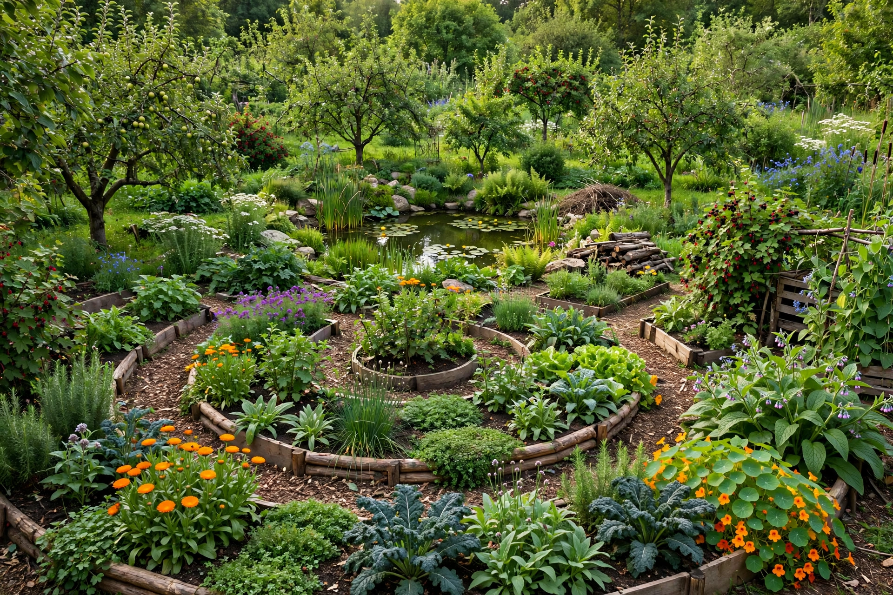

From Wikipedia, the free encyclopedia

Permaculture is an approach to land management and settlement design that adopts arrangements observed in flourishing natural ecosystems. It includes a set of design principles derived from systems thinking, and was coined as a term by Bill Mollison and David Holmgren in Tasmania in the 1970s — a contraction of "permanent agriculture", later broadened to "permanent culture". Mollison and Holmgren published the foundational book Permaculture One in 1978, and Mollison's Permaculture: A Designers' Manual (1988) remains the movement's most comprehensive text.
Permaculture rests on three core ethics: care for the Earth, care for people, and fair share (setting limits to consumption and redistributing surplus). Holmgren articulated twelve design principles, including "observe and interact", "catch and store energy", "obtain a yield", "use and value renewable resources", "produce no waste", "design from patterns to details", "integrate rather than segregate", "use small and slow solutions", and "use and value diversity".
Permaculture design maps a site into zones by frequency of use — from the house and intensive kitchen garden (zone 0–1) outward through orchards and grazing to unmanaged wilderness (zone 5) — and analyses sectors such as sun, wind, and water flow across the land. Characteristic techniques include:
Mollison drew on earlier influences including Masanobu Fukuoka's "natural farming", P. A. Yeomans's keyline system, and the work of J. Russell Smith on tree crops. From the 1980s the ideas spread worldwide through Permaculture Design Certificate (PDC) courses, a standardised 72-hour curriculum, and have been applied from suburban gardens to large farms, refugee camps, and arid-land restoration projects. Geoff Lawton's "Greening the Desert" project in Jordan became a well-known demonstration. Permaculture ideas overlap with, and have fed into, agroecology, regenerative agriculture, and transition-town movements.
Academics have criticised parts of permaculture practice for limited peer-reviewed evidence, occasional pseudoscientific claims among popularisers, and a resistance to formal scientific testing, while acknowledging its value as a design philosophy and its documented successes in soil building and water management. Yields relative to conventional and organic agriculture remain debated and site-dependent.